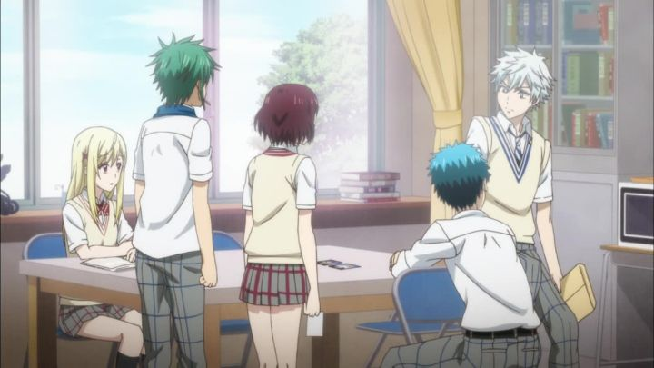

The first few minutes of "Yamada-kun and the Seven Witches" didn't leave a great impression, but I was impressed with how quickly it decides not to waste any time. In the first five minutes, we learn high-school bad boy Yamada is struggling to fit in with both classmates and his teachers for his poor attitude. When a teacher suggests he act more like ideal student Shiraishi, he scowls, and in a moment of arrogance, beats her up a flight of stairs, before tripping and accidently kissing her. When they both come to, they realize that they've magically switched bodies! After some trial and error, they learn this magical ability occurs whenever they kiss each other, and Yamada indirectly experiences bullying that the quiet Shiraishi commonly gets: his outspoken response to it gives Shiraishi new respect, ultimately changing her life for the better.That's all well before the first episode even ends! The two start using the power more often, to help Yamada pass a test or for Shiraishi to find more time to study during class. At one point, another student discovers their secret, and proposes they join the "Supernatural Studies Club," a student club in danger of disbanding due to lack of interest. In exchange, they'd get access to the clubroom as an easy place to kiss whenever they need to. Of course, when the club officially opens again, interest spurs, as new students come in with their own excitement in the supernatural. So much for a secret kissing room. THAT's the end of the first episode; seriously, it covers more story than more 12-episode seasons!An easy draw is the comedy behind the initial kissing gimmick. It turns out the two leads can kiss and switch with ANYONE, which gets tested with a variety of boys-to-girls, girls-to-girls, and boys-to-boys. Or girls-to-girls who internally have the spirits of boys-to-boys. It's as much fun as it sounds, and will make any room of teenage viewers squeel with embarrassed glee (again, this is within the first couple episodes, while most other romance anime won't allow a kiss at all). Technically, a few of these kisses are not consentual - in fact, the opposite side clearly says "no," but gets kissed anyway. That's blatant sexual assult in society circa 2020, so if you're sensitive to the subject, you might not appreciate the comedy of the show. As the episodes continue, the true plot of the show becomes clear: Shiraishi was secretly a "Witch" this whole time, one of seven "Witches" that exist in the female student body, according to the school's lore. Each has a unique power, each activated when they kiss someone. Yamada is one of the few "Witch-Killers" that have powers that counteract the Witches: his ability (again, activated by kiss) is to copy the power of the last Witch he kissed, while himself being immune. Each Witch is secretly suffering, either due to the power, or due to how they've been using it. Yamada and the Supernatural Studies Club take it upon themselves to investigate who the Witches are, and to help them if necessary. Meanwhile, the school's Student Government seems to know a lot more about the Witches than they let on, and for reasons unknown, want to keep things secret by any means necessary. Plotwise, this 2015 anime reminded me of 2012's "Kokoro Connect," but with a greater focus on comedy rather than drama. Both the plot and the sense of humor are elements "Yamada-kun and the Seven Witches" excels at surprisingly well. This could have easily been another harem comedy, but while fan-service is definitely present, it's clear that Yamada only really has growing feelings for Shiraishi. Even when the other girls suggest any such feelings, they seem satisfied with just friendship (aside from one or two, a juicy source of drama). Within the 12 episodes given, "Yamada-kun" manages to reach a compelling climax and a satisfying ending, even though the source manga hadn't yet been finished. Unfortunately, the production values form "Yamada-kun" are poor enough to weaken the show, at least superficially. The background designs are mostly bland, and character designs are distinct enough, but rely far too heavily on unique hair colors to help the viewer tell who is who. Seriously, every character's hair has a different color, like a rainbow, suggesting the cast wasn't bigger only because there weren't enough colors in the crayon box: this design philosophy works, but it's lazy. Animation doesn't need to work hard, so it doesn't, apart from a handful of violent kicks-into-a-wall. Even direction and scripted-dialogue doesn't always feel right. The music, both from the opening/ending themes and the backgound soundtrack, are servicable at best. Funimation's English dub attempts to highten the show through a spirited performance, and the cast gets fun opportunities whenever a character switches bodies (imagine a female actress pretending to be a boy in a girl's body, x7). However, even the English dub isn't particularly great: I'm giving extra points there for the effort involved. "Yamada-kun and the Seven Witches" suffers badly from lackluster direction and production-values, and this will make some viewers question why the show has any fanbase at all. But both the show and the manga DOES have a fanbase, and a well-deserved one: this is definitely a case where a solid story, solid characters, and a fun sense of humor can make an anime worth watching entirely on its own.
- "Ani" More reviews can be found at : https://2danicritic.github.io/ Previous review: review_xxxHolic Next review: review_Yellow_Submarine